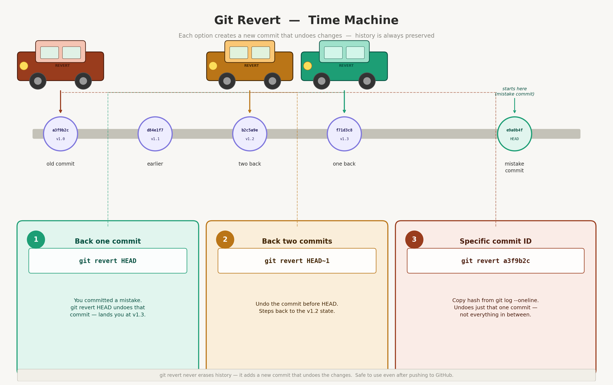
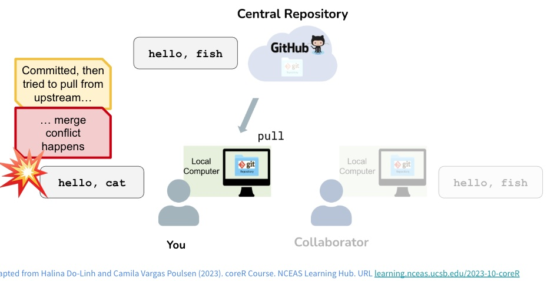

saves the current version locally each commit has a label so you can backtrack if needed
you can look at what changes between commits
gives you an opportunity to comment on what changes
Push/Pull
push integrates any local commits/changes to central GitHub
pull integrates any commits/changes from central GitHb to local
Git Guides are a really wonderful resource to refer to!
Information about your project git
Here are some useful commands if you run into set up issues (and in general)
to check that you have your git credentials set up correctly
#To see all info about your credentials and current repo#note that before you connect to GitHub the first time, it won't know about branches etcusethis::git_sitrep()
── Git global (user)
• Name: "Naomi Tague"
• Email: "ctague@bren.ucsb.edu"
• Global (user-level) gitignore file:
• Vaccinated: FALSE
ℹ See `usethis::git_vaccinate()` to learn more.
• Default Git protocol: "https"
• Default initial branch name: <unset>
── GitHub user
• Default GitHub host: "https://github.com"
• Personal access token for "https://github.com": <discovered>
• GitHub user: "naomitague"
• Token scopes: "gist", "repo", "user", and "workflow"
• Email(s): "ctague@bren.ucsb.edu (primary)" and "tague@ucsb.edu"
── Active usethis project: "/Users/naomitague/Courses/ESM_262" ──
── Git local (project)
• Name: "Naomi Tague"
• Email: "ctague@bren.ucsb.edu"
• Default branch: "main"
• Current local branch → remote tracking branch:
"main" → "origin/main"
── GitHub project
• Type = "ours"
• Host = "https://github.com"
• Config supports a pull request = TRUE
• origin = "naomitague/ESM_262" (can push)
• upstream = <not configured>
ℹ "origin" is both the source and primary repo.
ℹ Read more about the GitHub remote configurations that usethis supports at:
Can also find under Git tab in Rstudio project setup will show you remote
In terminal, try
git remote -v
History with GIT
locally- use the little clock button or commit
see the history of your commits
click on a commit to see what changed
Note
informative commit messages helps understand history
Correcting Misktakes if you haven’t committed
make a change and save
click revert to get rid of the changes that you don’t want
Try it
Correcting Mistakes if you have committed
Here we use the terminal window
The terminal window allows you to access a shell - it’s a way to interact with your computer using text commands instead of clicking on things.
Terminal is a powerful tool that:
allows you to do things that you can’t do with the graphical interface
uses Git commands that work everywhere not just with R, Rstudio
we will work with Terminal command more in the course
What to do in Terminal to get your code back to an earlier version
make a change and save
commit the change
in terminal type git revert HEAD
this will create a new commit that undoes the changes you just made
I’ll try and then you
Go back farther in time

git revert
Git commands
git revert HEAD goes back to the last change but if you want to go back to a specific commit, you can use the commit ID
commit-ID (the long string of numbers and letters that identifies each commit) instead of HEAD.
git revert
Find the SHA number (same as commit ID) in your Git History
Try it!
Other ways to go back in time
There are other options, git reset and git checkout
A bit more dangerous because they discard/overwrite changes instead of creating a new commit that undoes the changes
useful to keep things from getting ‘messy’ but we won’t go into here
Some other useful Git commands in Terminal
git status - shows you the status of your files (which ones are changed, which ones are staged for commit, etc.)
git log - shows you the commit history with commit messages and IDs
git diff - shows you the differences between your current files and the last commit (what changes you have made)
git push - pushes your local commits to GitHub
git pull - pulls the latest changes from GitHub to your local repository
git commit filename -m "your commit message" - commits your changes to the file with a message describing what you did.
git commit -a -m "your commit message" - commits all your changes with a message describing what you did.
git add filename - stages a file for commit (you need to stage files before you can commit them)
git checkout -- filename - discards changes in a file and reverts it to the last committed version (use with caution, as this will lose any unsaved changes in that file)
Collaboration with GitHub
git and github
Collaboration through GitHub
add a collaborator to your GitHub repository
under settings on Github
they will get an email invitation to collaborate on your repository
they can clone the repository to their local computer and make changes
they can commit and push their changes to GitHub
Note
Git doesn’t like having nested repositories so don’t clone a repository inside another repository!!!
Try it
with a partner, add each other to your repo
start a new Rproject -
select the option to clone from existing repo
make sure you save different directory than your original project!
make a change (maybe add a file, edit their quarto file, etc.)
commit and push
check on GitHub to see if your change is there
Conflicts

git conflicts
Conflicts
what happens if you and your collaborator change the same file and try to push/pull
this could be you from two different computers :)
Git and GitHub manage this
Github will try to merge the changes
if it can’t (you both changed the same line or something like that) - Conflict
when a Conflict occurs
Git rewrites the file to show you the conflicting changes using markers
Conflict Markers in Git
In the file where the conflict occurs - Git marks it by
<<<<<<< HEAD - start of your local version
======= - divider between your local version and Github version
>>>>>>> commit-ID - the end of the conflicting changes from the remote
I’ll demo
What you do
when file is conflicted Rstudio marks it with a U (unmerged)
edit that file to resolve conflict by choosing which version you want
stage and commit the resolved file and push to GitHub
Practice
add a collaborator to your repository
create a conflict by editing the same file and pushing/pulling
edit the conflicted file to resolve the conflict and push the resolved version to GitHub
IMPORTANT
you will have two R Projects - yours and your partners - make sure they are in separate places on your computer
you should try this twice - once for each persons repository